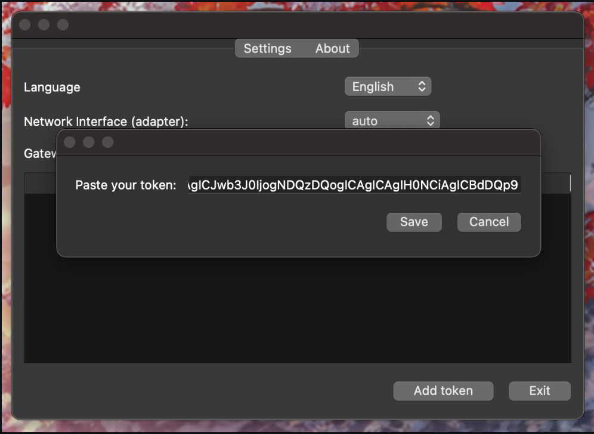
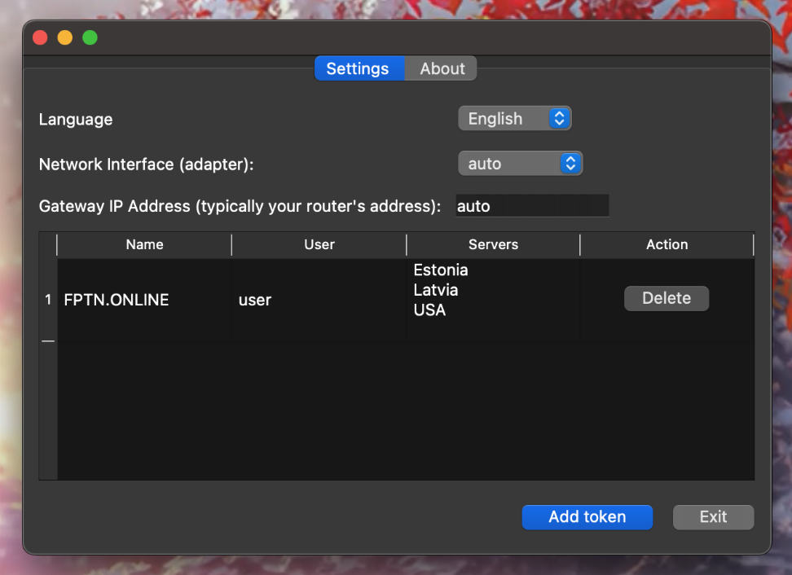

FPTN Project
FPTN is a free VPN designed to bypass censorship.
The client is a compact application with an interface located in the system tray. No registration required!

FPTN operates over the HTTPS protocol, effectively masking traffic and enabling users to bypass censorship restrictions. The project's source code is available on GitHub.
Install the client and download the configuration file from the Telegram bot.
FPTN Project
FPTN — это бесплатный VPN для обхода цензуры.
Клиент — миниатюрное приложение, интерфейс которого размещается в трее. Здесь нет регистрации!
FPTN работает через протокол HTTPS, эффективно маскируя трафик и позволяя обходить ограничения цензуры. Исходный код проекта доступен на Github.
Установите клиент и скачайте файл настроек из телеграм бота
Download FPTN
Скачать FPTN
Download MacOS client (Apple Silicon architecture) Скачать клиент для MacOS (архитектура Apple Silicon)
Установка и настройка
Через Telegram-бот скачайте файл настроек.
При установке клиента на MacOS вам может понадобиться более детальная инструкция из-за проблем с драйверами
После запуска приложения нажмите на иконку в системном трее чтобы открыть контекстное меню.

Откройте настройки FPTN-клиент. Нажмите кнопку "Load config" и выберите загруженный файл настроек. 
Сохраните настройки. 
Готово!

Installation and Setup
Download the configuration file through the Telegram bot.
When installing the client on macOS, you may need to refer to the more detailed instructions due to potential driver issues.
After launching the application, click on the system tray icon to open the context menu.
Open the FPTN client settings. Click the "Load config" button and select the downloaded configuration file.
Save the settings.
Done!
Download Linux client Скачать Linux клиент
Commandline tools Инструменты командной строки
Установка и настройка
Через Telegram-бот скачайте файл настроек.
При установке клиента на MacOS вам может понадобиться более детальная инструкция из-за проблем с драйверами
После запуска приложения нажмите на иконку в системном трее чтобы открыть контекстное меню.
Откройте настройки FPTN-клиент. Нажмите кнопку "Load config" и выберите загруженный файл настроек.
Сохраните настройки.
Готово!
Installation and Setup
Download the configuration file through the Telegram bot.
When installing the client on macOS, you may need to refer to the more detailed instructions due to potential driver issues.
After launching the application, click on the system tray icon to open the context menu.
Open the FPTN client settings. Click the "Load config" button and select the downloaded configuration file.
Save the settings.
Done!
Download the client for Windows (supports Windows 10 and Windows 11, x86_64 architecture) Скачать клиент для Windows (поддерживаются Windows 10 и Windows 11, архитектура x86_64)
Установка и настройка
Через Telegram-бот скачайте файл настроек.
Скачайте и запустите установщик. При запуске установщика, Windows покажет окно с предупреждением, нажмите "подробнее".
 И нажмите на кнопку "Запустить в любом случае".
И нажмите на кнопку "Запустить в любом случае".
 После чего подтвердите запуск установщика.
После чего подтвердите запуск установщика.
 После завершения установки нажмите кнопку завершить и приложение запустится автоматически.
После завершения установки нажмите кнопку завершить и приложение запустится автоматически.
 После запуска клиента в системном трее появится иконка приложения. Кликните по иконке и откройте настройки, чтобы установить ранее загруженный конфиг, полученный через Telegram-бота.
После запуска клиента в системном трее появится иконка приложения. Кликните по иконке и откройте настройки, чтобы установить ранее загруженный конфиг, полученный через Telegram-бота.

Нажмите кнопку «Загрузить конфиг».

И выберите загруженный конфиг файл.

После открытия появится список доступных серверов, далее нужно сохранить настройки.

В системном трее кликните по иконке приложения и выберите "Умное подключение". "Умное подключение" подберет наиболее оптимальный сервер.

Готово!

Installation and Setup
Download the configuration file via the Telegram bot.
Download and run the installer. When launching the installer, Windows will display a warning window. Click "More info."
Then click the "Run anyway" button.
After that, confirm the installer execution.
Once the installation is complete, click the Finish button, and the application will launch automatically.
After launching the client, the application icon will appear in the system tray. Click the icon and open the settings to load the previously downloaded configuration file obtained via the Telegram bot.
Click the "Load config" button.
Then select the downloaded configuration file.
After opening the file, a list of available servers will appear. Save the settings.
In the system tray, click the application icon and select "Smart Connection." "Smart Connection" will choose the most optimal server for you.
Done!
А еще, можно легко превратить RaspberryPi/OrangePi в WiFi-точку доступа и установить на неё FPTN-клиент.
В этом случае все устройства, подключённые к WiFi, получат доступ к интернету, обходя любые ограничения.
Информация тут

Любую помощь можно получить в нашем чате!
You can also easily turn a Raspberry Pi or Orange Pi into a WiFi access point and install the FPTN client on it.
In this case, all devices connected to the WiFi will have unrestricted internet access, bypassing any limitations.
More information here
For any assistance, feel free to join our chat!